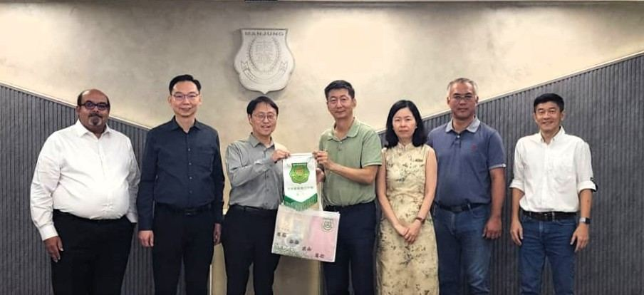
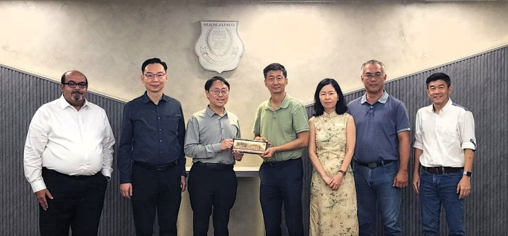

亚太科技大学莅临拜访南华独中
亚太科技大学莅临拜访南华独中
探讨教育合作项目
携手探索未来教育新篇
亚太科技大学（APU）校方代表一行莅临南华独立中学，双方就“教育合作项目”展开高层会谈，旨在连接高中技职教育与大学专业培养、强化教师发展与科技教育链结，为本地华文独中学生铺设通向未来人才市场的多元通道。
亚太科技大学 此行由以下代表组成：副校长 Prof Dr Ho Chin Kuan、注册主任 Dr Teh Choon Jin，以及商学院兼全球酒店与旅游学院资深主管 Prof Dr Kashif Hussain。南华独中方面则由董事长 颜登逸先生、董事总务 何添胜先生、董事 黄思贤先生与校长 陈丽冰 博士共同接待。
在双方友好且务实的对话中，就以下三大合作方向展开深入探讨：
一、酒店管理技职教育课程：
南华独中拟于技职教育课程中增设“南华酒店管理” 专业模块，而APU在酒店与旅游管理教育上具备成熟课程及国际链接，双方以学生学习及就业前景等各方面进行全面性的讨论。
二、科技教育与未来技能：
亚太科技大学强调以科技为中心、培养具备国际视野与多元文化背景的专业人才。南华独中亦愿将其“培养‘迎领’ 21世纪中华文化素养领袖人才"的愿景，与技术教育与创新技能接轨。
三、教师专业提升与双校协作：
双方认同教师为教育生态中关键一环，未来拟通过联合研讨、教师培训、校际资源共享等方式，提升教师在技职教育、科技教育与酒店旅游教育等领域的专业能量。
双方经过缜密且周全的讨论，认同当下教育生态需兼具文化底蕴与科技能力，两者相辅相成，缺一不可。尤其是在世代更迭、科技迅速演进的当下，教育不应仅为传授知识，更要引导学生成为拥有文化根基、具领航力与国际视野的人才。谈及教师作为教育的中坚分子扮演着持续专业发展、校际跨层级合作，是培养未来领袖人才的重要途径。
经过深入探讨以后，双方将签署合作备忘录（MOU），未来将逐步落地诸如课程共建、学生选修、教师培训、学术交流、产业实训等方案，使合作项目从理念走向实践、从构想迈入落实。未来，两校将在“文化”与“科技”之间寻找交汇点，在“本地”与“国际”之间架起桥梁，共同为人才培养谱写新的篇章。

